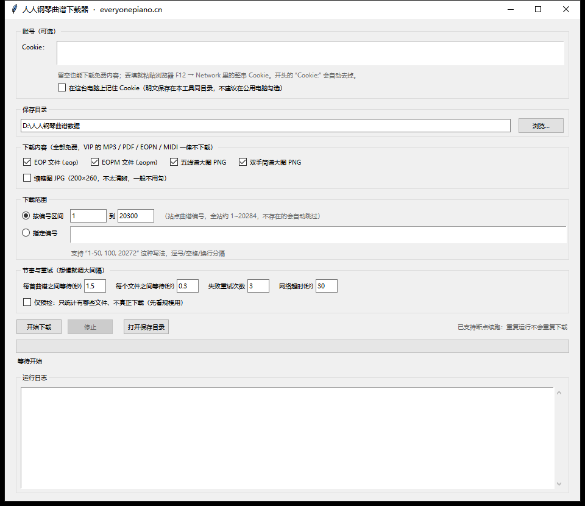

把 everyonepiano.cn 上不需要 VIP 的曲谱成批搬到本地硬盘。 图形面板自己填 Cookie、自己选目录、自己定请求节奏； 下载的是 2500×3400 的完整五线谱大图，不是列表页那种小缩略图。 需要 VIP 的 MP3 / PDF / EOPN / MIDI 一律不下载，工具里也没有任何绕过付费的逻辑。
GETTING STARTED
下载、双击、设目录、填 Cookie、点开始。整个流程不需要懂命令行，也不需要装 Python。
从仓库的 Releases 页取 PianoSheetDownloader.exe，放到自己顺手的位置。
免安装，双击即开。首次启动要解包，比之后慢几秒属正常。
默认存到 D:\人人钢琴曲谱数据；点“浏览…”改成你想要的位置。
那一格默认是空的，就是留给你的。留空也能下免费内容，先空着跑即可。
按编号区间或指定编号，点“开始下载”；进度、日志实时刷新。
WHAT YOU GET
同一个曲谱页上挂着八种文件，其中四种免费、四种要会员。工具只抓免费的那一半。
大图是完整的曲谱扫描件，每页一张 PNG，可以直接看、也可以打印； EOP 是曲子本体文件，用 EOP 软件能跟着弹，EOPM 是配套的指法／教程包。
这四类在线时通常不登录也能取到，所以 Cookie 栏留空就能开工。
这四类在页面上只有“购买 VIP 会员”的入口，没有下载链接。 工具干脆不去请求它们——不猜地址、不试接口、不做任何绕过付费内容的尝试。
THE PANEL
面板从上到下就是一次完整的下载流程，所有选项都摆在明面上，没有藏在菜单里的开关。

D:\人人钢琴曲谱数据，四种免费内容默认全勾，Cookie 框留空。| 区域 | 作用 | 怎么用 |
|---|---|---|
| 账号（可选） | 被站点拦时的登录态 | 多行输入框，直接粘贴整串 Cookie；开头的 Cookie: 会自动去掉。四种免费内容一般用不上，留空也能下。勾了“在这台电脑上记住 Cookie”才会明文写进工具同目录的 下载器设置.json，公用电脑不要勾。 |
| 保存目录 | 文件落在哪里 | 默认 D:\人人钢琴曲谱数据，目录不存在时会在开始下载那一刻自动创建。“浏览…”换目录，“打开保存目录”直接在资源管理器里打开它。 |
| 下载内容 | 只列免 VIP 的几类 | EOP、EOPM、五线谱大图 PNG、双手简谱大图 PNG 默认全勾。下面还有一个“缩略图 JPG（200×260）”，默认不勾——那是列表页的小图，不清楚，一般不需要。VIP 的四类只写在标题栏里作说明，既点不动，也永远不会被请求。 |
| 下载范围 | 这一轮下哪些曲谱 | 二选一：按编号区间 / 指定编号，详见下一节。 |
| 节奏与重试 | 控制请求速度与容错 | 默认每首之间 1.5 秒、每个文件之间 0.3 秒、失败重试 3 次、网络超时 30 秒。想让站点更舒服就调大间隔。下面的“仅预检”只统计有哪些文件、不真正下载，适合先看规模。 |
| 按钮组 | 手动控制任务 | 开始下载 / 停止 / 打开保存目录。任务跑起来后“开始下载”变灰；“停止”会让当前文件下完再收尾，不会留半个坏文件。 |
| 进度与状态 | 看跑到哪了 | 进度条按“已处理 / 总数”推进，下面一行显示 完成几首、无可用文件几首、跳过几个编号、用时与平均速度。 |
| 运行日志 | 每一步都留痕 | 每个编号的判定结果与失败原因都写在这里，绿色是通过、红色是失败或跳过。遇到问题，先看日志最后几行。 |
RANGE
全站约两万首，不建议一口气跑完。按编号分批，比如今天跑 1–500、明天接着 501，中途停下也不怕。
1 到 500 = 500 个编号1-50, 100, 20272
曲谱编号就是网址里 Music-20272.html 的那串数字。在站点的曲谱页上翻到一首，看地址栏就能读到。
ON DISK
每首曲子一个文件夹，名字是“7 位补齐编号-曲名”；这一首的全部文件都在里面，不会散落一地。
D:\人人钢琴曲谱数据\ ├─ 0020272-滨河东路-赵磊-焉栩嘉-张颜齐-贺俊雄-赵政豪-蒋熠铭\ │ 0020272.eop ← 曲子本体 │ 0020272.eopm ← 指法／教程包 │ 0020272-w-b-1.png … 0020272-w-b-5.png ← 五线谱大图 2500×3400，共 5 页 │ 0020272-j-b-1.png … 0020272-j-b-4.png ← 双手简谱大图 2381×3368，共 4 页 ├─ 0001674-生日快乐完整好听版\ ← 这首站点没有 EOPM，就不会有那个文件 ├─ 曲谱清单.csv ← 每首一行：已获得哪些、状态、备注、时间 └─ 下载日志.txt ← 每个文件的判定结果与失败原因
每个文件都要过校验：0 字节、被站点顶成 HTML 错误页、文件头魔数对不上，一律判为失败并写下原因，绝不悄悄留个坏文件给你。 不存在的编号不会建空文件夹——站点对不存在的资源返回的是一张 1382 字节的伪页面，工具按内容识别，日志里写明“编号不存在”。
FROM SOURCE
仓库里放着同一份 人人钢琴曲谱下载器.py。它只用到 Python 标准库，装了 Python 3.9+ 就能跑，不需要 pip install 任何东西，行为与 exe 完全一致。
# 没有依赖要装，直接开面板
python 人人钢琴曲谱下载器.py
FAQ
不需要。exe 已经把 Python 运行时一起打包好了，约 10.7 MB 单文件，双击即用。想跑源码也不难——脚本不用任何第三方库，不用 pip install。
PyInstaller 打包出来的 exe 被误报是常见现象。你完全可以改用源码运行——仓库里的 .py 与 exe 是同一份代码，python 人人钢琴曲谱下载器.py 得到的面板一模一样。
不是。工具抓的是完整曲谱大图：五线谱 2500×3400、双手简谱 2381×3368，每页一张 PNG，放大看音符合唱线都清楚。列表页那种 200×260 的小图是面板里另一个可选项，默认不勾。
不用。工具不写“已完成”标记文件，而是每次运行时检查文件是否已存在、大小是否为零、文件头魔数对不对——通过就跳过，进度里的“跳过”计数看得见。重复运行不会重复下载，下到一半断了也会从缺的那几页续上。
张数由曲谱本身的长度决定。工具从曲谱页上那句“共 N 张”读取真实页数，再按编号逐页去取，不会多下也不会漏下。
会被跳过，不会卡住、也不会建一堆空文件夹。站点对不存在的资源不返回 404，而是返回一张 1382 字节的 HTML 页，工具按内容识别它，日志里写明“编号不存在”。所以填区间时大胆填，遇到空号自己就让过去了。
不能，这是刻意的。这四类在站内属于会员内容，页面上没有免费入口。工具不去猜地址、不去试接口、不去绕验证——需要这些文件请走站点的官方付费渠道。
取决于你设的间隔。按默认的“每首之间 1.5 秒 + 每个文件之间 0.3 秒”估算，全站跑完是十几个小时量级。所以更推荐按编号区间分批跑，随时能停，下次接着下。